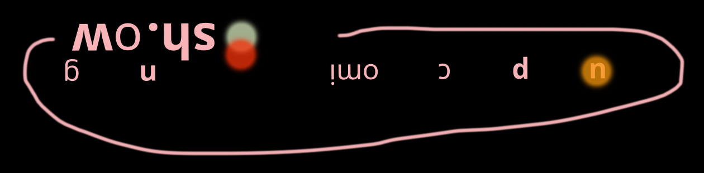

WILD HUNNY opening reception
Saturday June 27,
2 — 5pm
44 Gurner Street, Paddington
A show about the confluence of dreams and consensus reality, the landscape exposes symbols that serve as a mirror to the psyche.
A product of Muir's deep connection with the natural world, the work represents a re-centring on nature as god, drawn from the artists near fatal struggle with addiction and mental illness. This too is transformed in the work, each piece becoming a guardian or allegory for the balance between light and dark, and the sacred in the human experience.
Exhibition runs June 27 — July 7